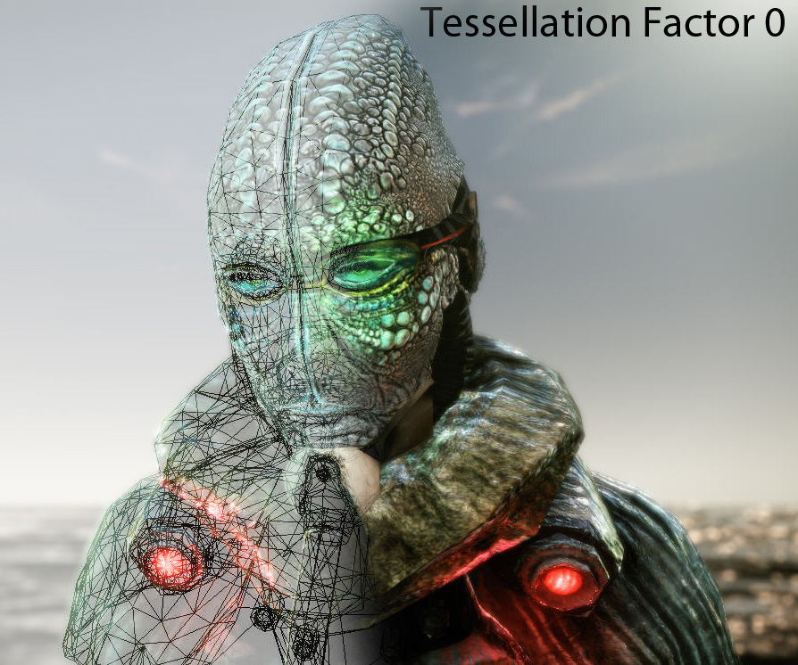
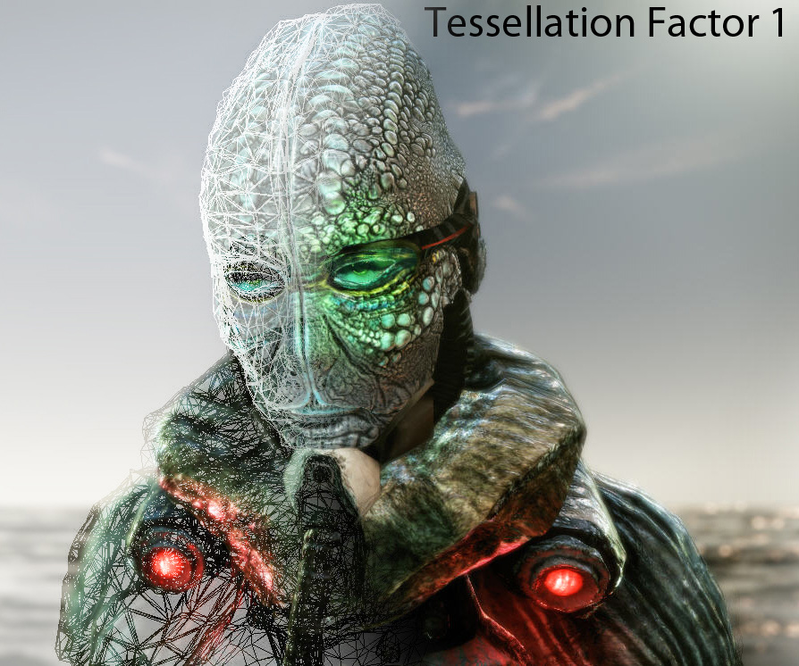
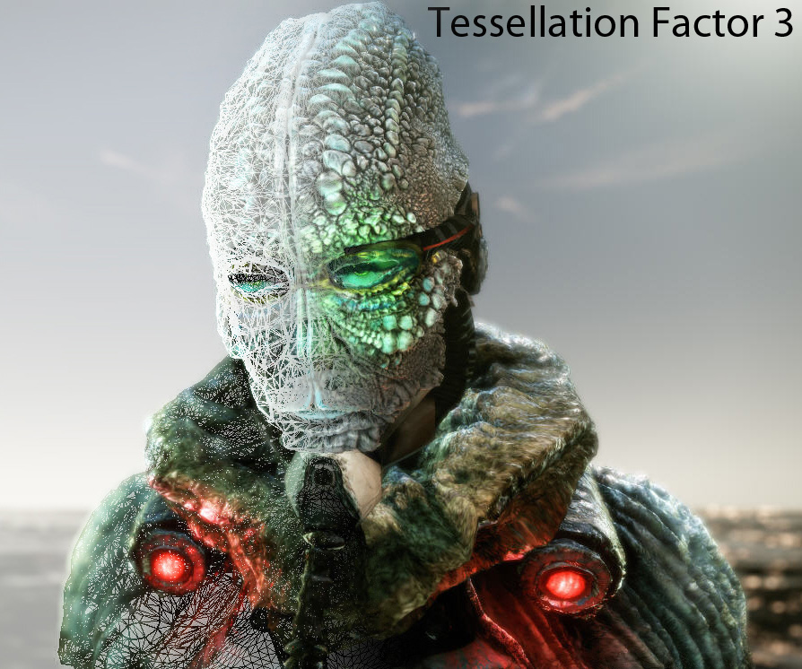
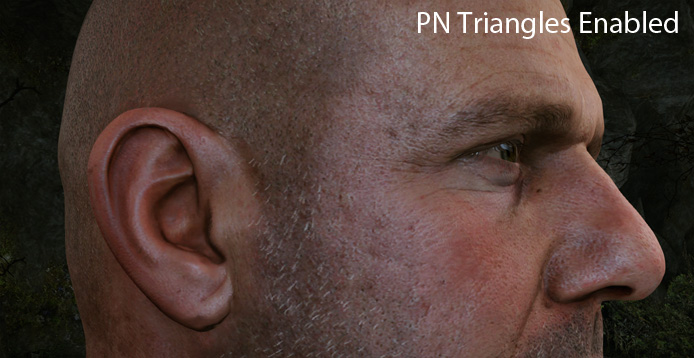
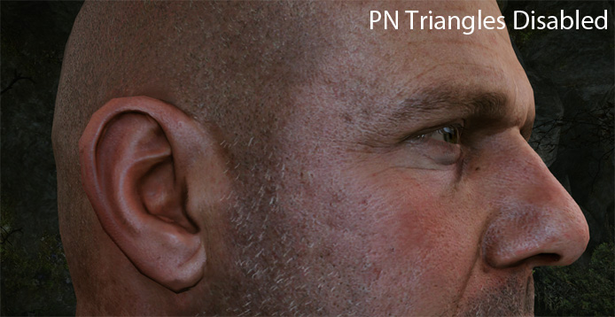
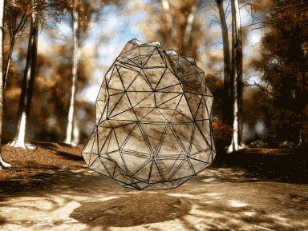
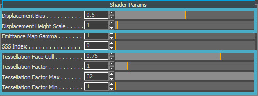

Overview
No pre-tessellated meshes are needed for this feature; essentially all you need to do is load a model and set up your material by enabling tessellation and/or displacement mapping.
This allows the artists to add definition into models like never before. The Illum, HumanSkin and Vegetation shaders support Tessellation.
Supported Tessellation Schemes
Three types of Tessellation are supported: Displacement, PN Triangles and Phong.
Displacement
 |  |  |
| Tessellation Factor 0 | Tessellation Factor 1 | Tessellation Factor 3 |
|---|
PN Triangles
 |  |
| PN Triangles Enabled | PN Triangles Disabled |
|---|
Phong
Phong Tessellation Scheme 
Tessellation / Displacement Shader Parameters

Shader Gen Param | Description |
|---|---|
Displacement mapping | Scalar displacement stored in alpha channel of a _displ texture. |
Phong Tessellation | Very approximate smoothing based on normals, suffers from 'inflation', i.e. surface is not perfectly smooth across patch boundaries, looks a bit inflated. |
PN Triangles Tesselation | Similar to Phong tessellation but slower with better approximation. |
Shader Param | Description | Shader Gen Option |
|---|---|---|
Displacement Bias | Allows you to move the plane from where the displacement is applied. | Displacement |
Displacement Height Scale | Allows you to change the height of the displacement. | Displacement |
Tessellation Face Cull | Defines the extent at which vertices are culled, this is used for 2-sided sorting of polygons (2 Sided must also be checked). | PN / Phong |
Tessellation Factor | Controls the density of the mesh triangles. | PN / Phong |
Tessellation Factor Min/Max | In some cases (like a cutscene) where you know the object will be at a certain distance from camera (or fixed range) you can clamp the factor to get rid of view dependent tessellation factor which can result in geometry 'popping' artifacts. So for general cases you can just increase the factor, in special cases you can clamp it. | PN / Phong |
Seams/Crack Fixing
There are two types of cracks that can become noticeable when using tessellation:
1. UV Seams
This occurs when two adjacent triangles share an edge but in fact they use separate vertices with different UV's.
This edge will then have different displacement on each side due to sampling different places in displacement map (even tiny differences in UV can cause visible cracks).
This is automatically fixed by the engine if there is no tiling otherwise the artist has to change the UV mapping to hide such artifacts if possible.
There is no such thing as UV seams for Phong tessellation or PN triangles as they do not use any UV mapping.
2. Border Seams
This occurs when different meshes placed close to each other (water tight) or a mesh consisting of sub-meshes can cause unpleasant cracks because of using different materials with different displacement (or even same displacement maps, slightly different UV mapping).
Manual Solution
Artist places meshes carefully and/or fades out displacement himself by modifying a displacement map where needed.
All of the tessellation schemes are enabled through the material editor and on a per material basis. This means that all objects with this material applied will be affected.
Automatic Solution
RC adds special flag to all boundary vertices, these are then not displaced at all. *This feature is currently disabled in the Resource Compiler*.
Troubleshooting
- Height maps have to be explicitly stored using the _displ suffix, i.e. road_displ.tif. Save the displacement map in the alpha channel of your _displ texture. The RGB channels can be left empty.
- Do NOT attach the height map as an alpha channel of the normal map. Using the alpha channel of the Normal map has been deprecated and will no longer work.
- You must save your _displ texture using the CryTIF Photoshop plugin. The will write the correct meta data onto a .tif file for it to be converted to a .dds at run-time. In some cases you may need to click 'Generate Output' in the CryTIF dialogue.
- When saving in CryTIF use the DisplacementMap preset to store _displ textures. Height maps will be converted to A8 (BC4 for 3.7) textures.
- If you don't see any displacement, double check the format in the Editor's texture file dialog preview. If it isn't A8/BC4, fix the preset then save and reload.
- Set the Diffuse and Normal map textures as usual in the Material Editor. Also set the _displ texture in the Heightmap slot.
- Ensure you are in Very High spec (CVar: sys_spec=4).
- To enable tessellated shadows for tessellated Geom Entities, use e_ShadowsTessellateCascades=1, but keep in mind this comes at a performance cost.